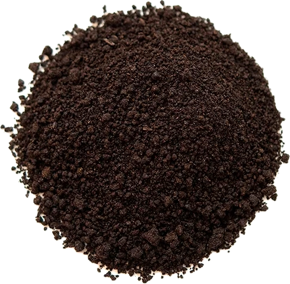

Vanilla planifolia
Overview
Vanilla is a flavoring derived from the pods of orchid plants in the Vanilla genus, native to Mexico and Central America. It has a sweet, floral flavor and aroma with hints of caramel and spice and is prized for its culinary and aromatic properties. Vanilla is commonly used to flavor sweets, desserts, beverages, and perfumes.
Cultural Overlap
Vanilla is used in cuisines around the world, particularly in Western, Caribbean, and Indian cuisines. It is used to flavor cakes, cookies, ice cream, custards, chocolates, and beverages such as coffee and cocktails. Vanilla also has cultural significance in traditional medicine and rituals, where it is believed to have various health benefits and symbolic meanings.